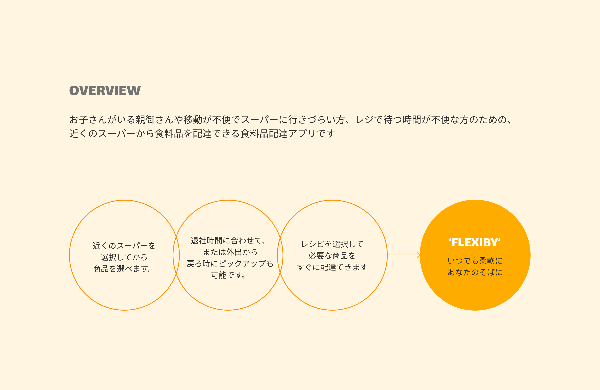
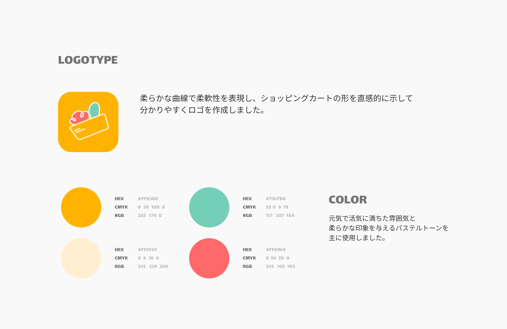
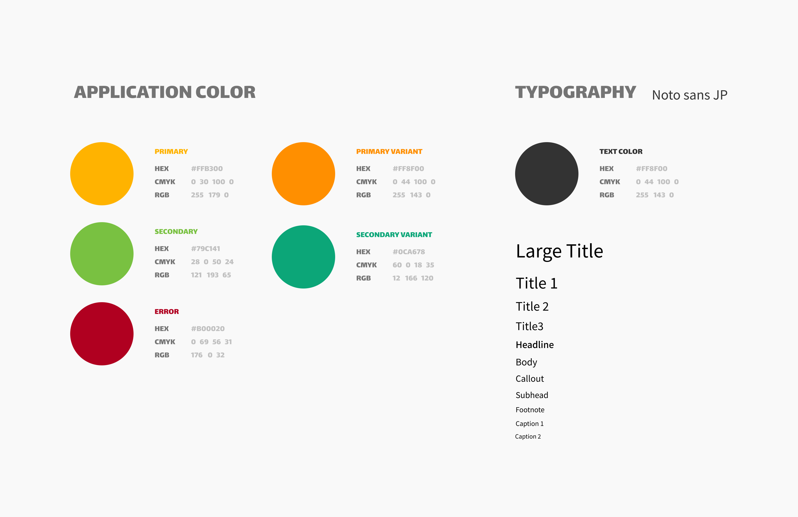
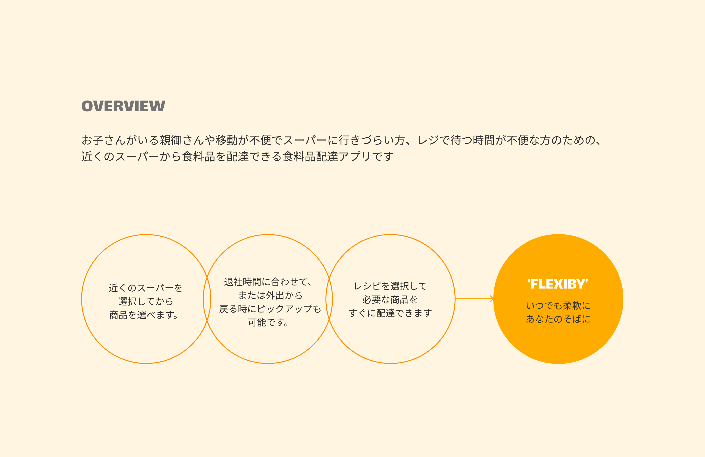
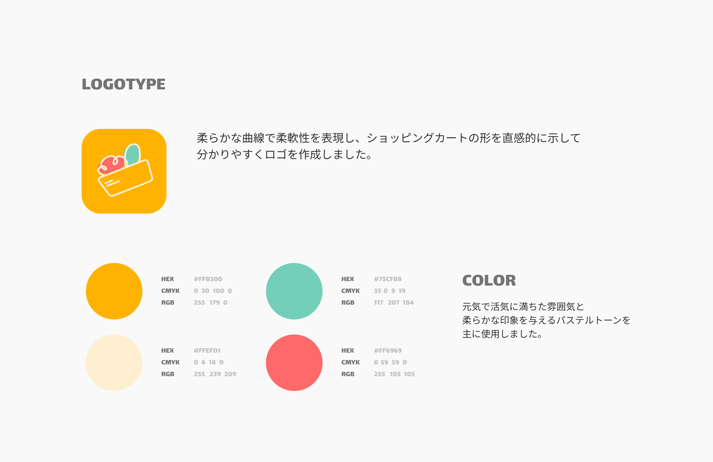
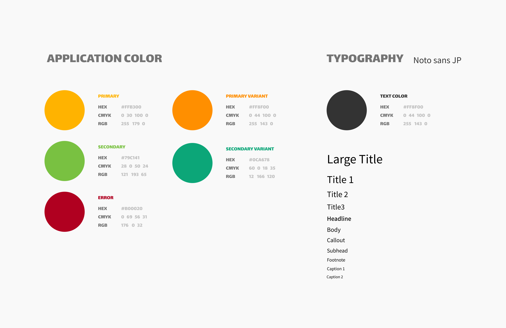
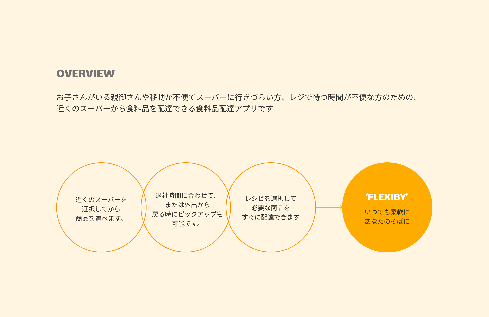
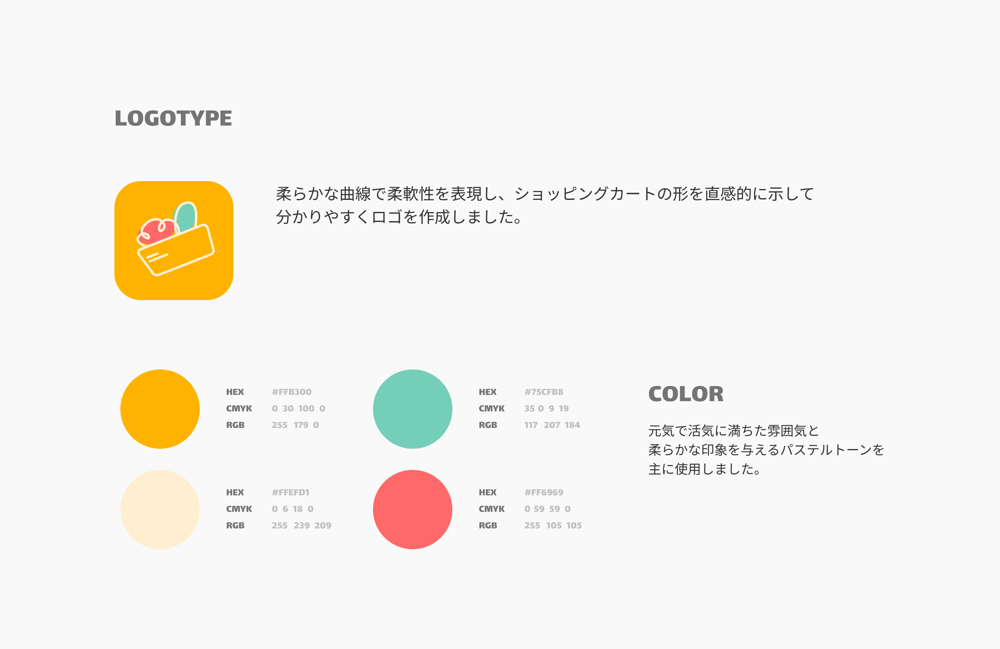
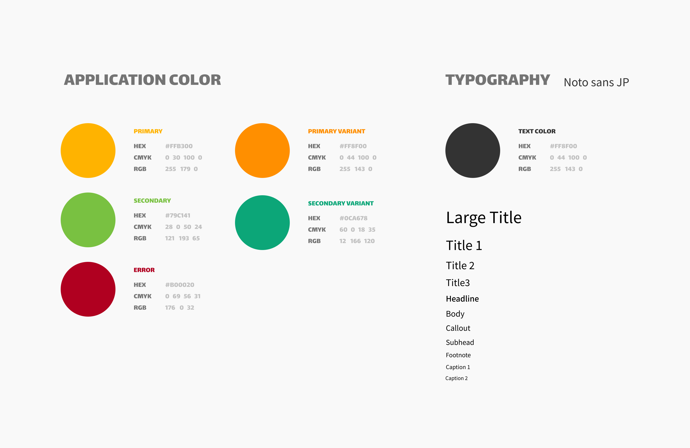
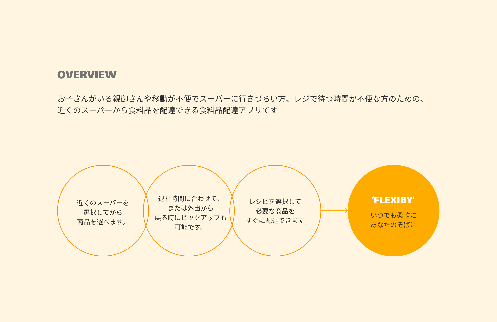
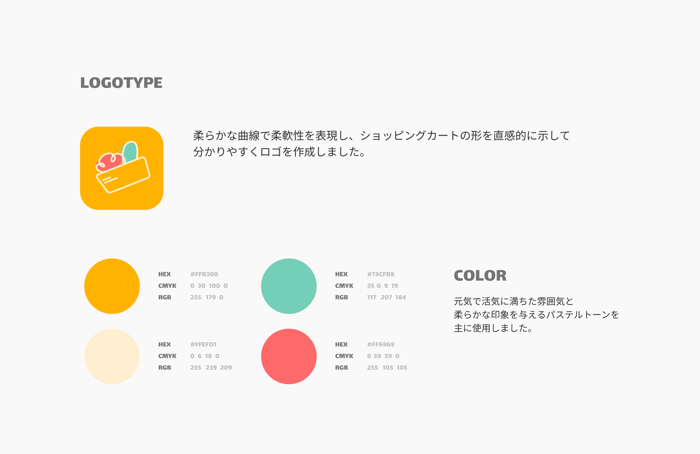
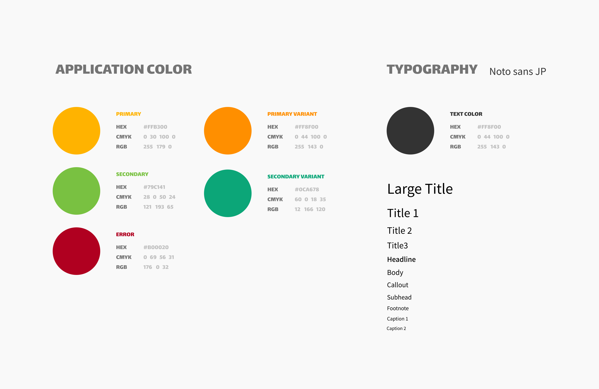
可愛らしいイラストのカテゴリーと 距離順に並んだ店舗を順番に表示して、 食料品配達というコンセプトを簡単に理解できます
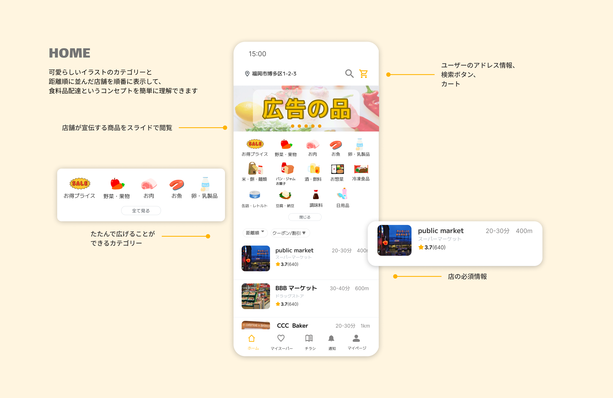2つの検索ページで構成されて、検索しなかった場合は おすすめレシピを表示してユーザーの悩みを解消します。 商品を検索した場合は、その商品のキーワードを持つ店舗を 距離順に表示して、簡単に複数の商品を比較できます。
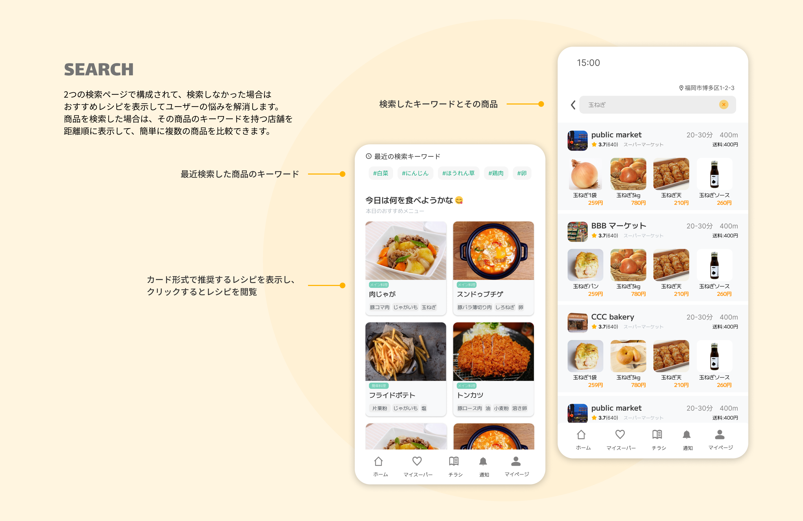今日のおすすめレシピを見て、必要な食材をすぐに チェックして注文できます。ユーザーとの距離やより多くの 食材を持つ店舗に基づいて、最適な店舗がトップに表示されます。 食材だけでなく、下部には料理手順も見れます。
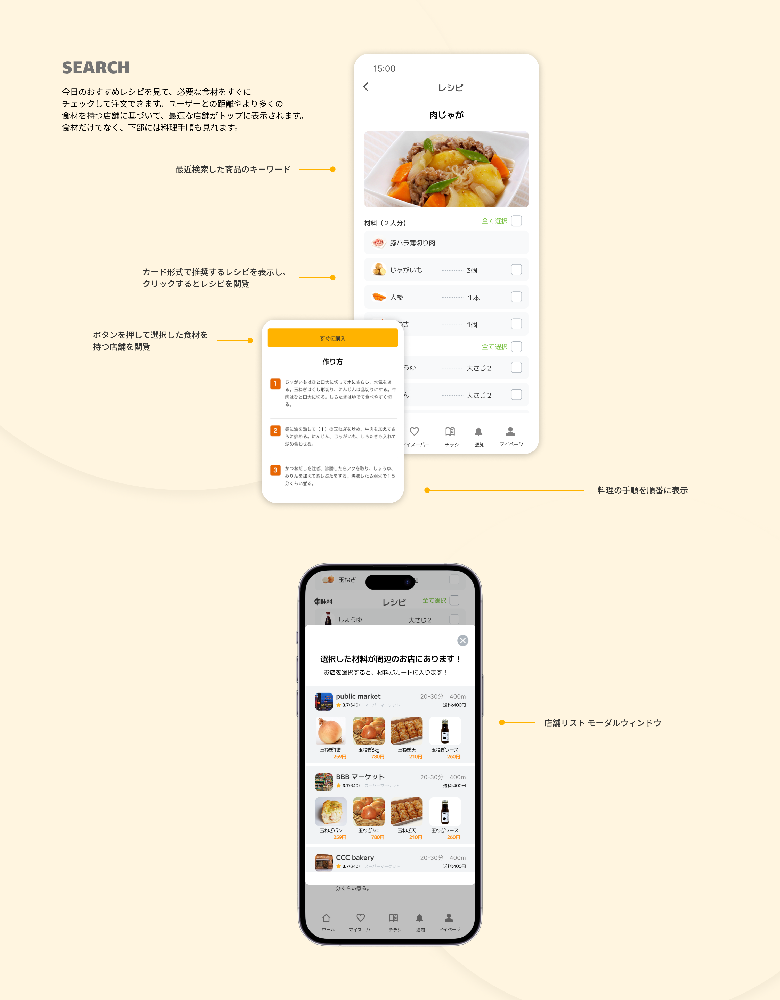프로젝트를 통해 얻은 경험, 스킬, 교훈 등을 설명